Let AI agents loose on your repo without letting them loose on your machine.
Foil runs Claude Code, OpenAI Codex or any other agent in an instant copy-on-write branch of your project. The agent edits, builds and tests freely; your folder doesn't change until you review the diff and commit. No Docker, no root, no VM. Linux and macOS.

What it does
A branch in ~25 ms
Any repo size. Nothing is copied until it is written, untracked files and build state included. On a 1 GB repo, cp -a takes 1.9 s.
Review, then commit
foil diff --patch shows exactly what changed. foil commit applies it, refusing files that changed under it; foil abort throws it away.
Secrets stay hidden
--strict hides ~/.ssh, tokens and other repos. The agent never sees its API key: foil's proxy adds it on the way out.
Network allow-list
Only the hosts you name, e.g. --allow-host pypi.org. Everything else gets 403.
Many agents at once
foil fanout -n 3 --check "make test" runs attempts in parallel branches and keeps the best passing one.
Nothing left behind
Every process a run started is stopped at the end, daemons too. --memory, --cpus, --pids and --timeout cap runaways.
Install
brew install ai-agentic-tools/tap/foil # macOS or Linux
curl -fsSL https://raw.githubusercontent.com/ai-agentic-tools/foil/main/install.sh | sh
cargo install foil-sandbox # from source; the command is foil
foil doctor # what works on this machineThen, in any project:
foil agent claude # Claude Code in a strict branch of this folder
foil run -b fix-login --strict --allow-host pypi.org -- ./my-agent
foil diff --patch fix-login # review exactly what changed
foil commit fix-login # apply it (or: foil abort fix-login)How it compares
| git worktree | Docker | Cloud sandbox | foil | |
|---|---|---|---|---|
| Ready in | seconds | seconds to minutes | seconds, plus upload | ~25 ms, any size |
| Untracked files and build state | no | if mounted | if uploaded | yes |
| Review before it reaches your folder | via git | no | no | yes |
| Hides ~/.ssh and tokens | no | yes | yes | yes |
| Needs | git | a daemon, an image | an account, a network | one 2 MB binary |